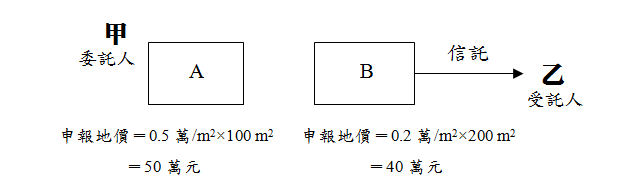
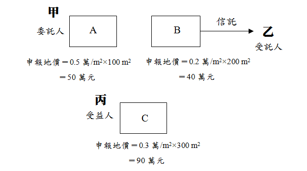

主題精選：地價稅¶
共收錄 24 篇文章。
1. 騎樓地價稅減免¶
發布日期: 2026-03-03
內文¶
根據土地稅減免規則第10條，供公共通行之騎樓走廊地，無建築改良物者，應免徵地價稅，有建築改良物者，依下列規定減徵地價稅。 一、地上有建築改良物一層者，減徵二分之一。 二、地上有建築改良物二層者，減徵三分之一。 三、地上有建築改良物三層者，減徵四分之一。 四、地上有建築改良物四層以上者，減徵五分之一。
範例：一棟總樓層10層樓之公寓大廈，基地面積為1,500平方公尺，每戶土地持分各1/10，而1樓供公共通行的騎樓走廊地面積為50平方公尺。 當任何一位土地所有權人向稅捐處申請減免地價稅，因本棟共10層樓，屬騎樓走廊地的上方有4層以上，故各樓層有持分基地的所有權人，皆可減徵騎樓走廊地面積的1/5，即50平方公尺×1/5＝10平方公尺。 因此，每一土地所有權人各可減徵10平方公尺的1/10（每戶持分），也就是1平方公尺的地價稅。
注：本文圖片存放於 ./images/ 目錄下
2. 公共設施保留地與公共設施用地之比較（二）¶
發布日期: 2026-02-05
內文¶
- 租稅優惠： (1)地價稅：
①公共設施保留地：
• 公共設施保留地未作任何使用並與使用中之土地隔離，免徵地價稅。
• 公共設施保留地作農業使用，課徵田賦。田賦自民國76年停徵迄今。
• 公共設施保留地作自用住宅用地，按千分之二計徵地價稅。
• 公共設施保留地作自用住宅用地以外之建築使用，統按千分之六計徵地價稅（不累進）。（土稅§19）
②公共設施用地：
• 道路：無償供公眾通行之道路土地，經查明屬實者，在使用期間內，地價稅全免。但其屬建造房屋應保留之法定空地部分，不予免徵（土稅減§9）。
• 學校用地：財團法人或財團法人所興辦業經立案之私立學校用地、為學生實習農、林、漁、牧、工、礦等所用之生產用地及員生宿舍用地，經登記為財團法人所有者，全免。但私立補習班或函授學校用地，均不予減免（土稅減§8I①）。
• 公園及體育場所用地：私立公園及體育場所用地，按千分之十計徵地價稅（不累進）（土稅§18I②）。又，經事業主管機關核准設立，對外絕對公開，並不以營利為目的之私立公園及體育館場，其用地減徵百分之五十；其為財團法人組織者減徵百分之七十（土稅減§8I③）。
• 停車場用地：依都市計畫法規定設置之供公眾使用之停車場用地，按千分之十計徵地價稅（不累進）（土稅§18I④）。
• 其餘公共設施用地：上述以外之私有公共設施用地，無減免規定，持有時均應課徵地價稅。
• (2) 土地增值稅：
①公共設施保留地：
• 被徵收之土地，免徵土地增值稅；依法得徵收之私有土地，土地所有權人自願售與需用土地人者，免徵土地增值稅（土稅§39I）。
• 依都市計畫法指定之公共設施保留地尚未被徵收前之移轉，免徵土地增值稅（土稅§39Ⅱ）。
②公共設施用地：
• 都市土地：私有公共設施用地（如道路用地、學校用地、公園用地、體育場所用地、停車場用地等）之移轉，無減免規定，移轉時均應課徵土地增值稅。
• 非都市土地：非都市土地經需用土地人開闢完成或依計畫核定供公共設施使用，並依法完成使用地編定，其尚未被徵收前之移轉，經需用土地人證明者，免徵土地增值稅（土稅§39Ⅲ）。
• (3) 房地合一所得稅：
①公共設施保留地：
• 被徵收或被徵收前先行協議價購之土地，免徵所得稅（所§4-5I③）。
• 尚未被徵收前移轉依都市計畫法指定之公共設施保留地，免徵所得稅（所 §4-5I④）。
②公共設施用地： 所有公共設施用地，無減免規定，交易時均應課徵所得稅。
• (4) 遺產稅：
①公共設施保留地： 公共設施保留地因繼承而移轉，免徵遺產稅（都§50-1）。
②公共設施用地：
• 道路用地：被繼承者遺產中經政府闢為公眾通行道路之土地或其他無償供公眾通行之道路土地，經主管機關證明者，不計入遺產總額（其租稅效果等同免徵遺產稅）。但其屬建造房屋應保留之法定空地部分，仍應計入遺產總額（遺贈§16⑫）。
• 其餘公共設施用地：道路用地以外之私有公共設施用地，無減免規定，繼承時均應課徵遺產稅。
• (5) 贈與稅：
①公共設施保留地： 公共設施保留地因配偶、直系血親之贈與而移轉者，免徵贈與稅（都§50-1）。
②公共設施用地： 所有公共設施用地，無減免規定，贈與時均應課徵贈與稅。
綜上，對公共設施保留地土地所有權人之權益保障較公共設施用地為多，違反租稅平等原則。
【註】 都：都市計畫法。 徵：土地徵收條例。 土稅：土地稅法。 土稅減：土地稅減免規則。 遺贈：遺產及贈與稅法。 所：所得稅法。
注：本文圖片存放於 ./images/ 目錄下
3. 差別稅率¶
發布日期: 2025-10-02
內文¶
土地稅採差別稅率之目的，在達成其政策目的（如平均社會財富、實現地利共享、打擊炒房投機等）。茲分述如下：
• (一) 地價稅之差別稅率：地價稅針對申報地價總額（即地價稅之稅基）與累進起點地價之倍數大小的不同，採差別稅率，以抑制兼併、壟斷土地。
• (二) 土地增值稅之差別稅率：土地增值稅針對土地漲價總數額（即土地增值稅之稅基）與原地價（即原規定地價或前次申報移轉現值）之倍數大小的不同，採差別稅率，以實現地利共享，並減少投機誘因。
• (三) 房地合一所得稅之差別稅率：房地合一所得稅針對持有房地年數長短的不同，採差別稅率，以懲罰短期持有及打擊炒房投機。
• (四) 房屋稅之差別稅率：房屋稅針對持有房屋戶數的不同，採差別稅率，以制止囤房投機。
值得一提的是，地價稅及土地增值稅屬於累進稅，房地合一所得稅及房屋稅屬於比例稅。不論累進稅或比例稅，皆可採差別稅率，發揮租稅之政策效果。
注：本文圖片存放於 ./images/ 目錄下
4. 地價稅與房屋稅之信託歸戶對照¶
發布日期: 2024-12-05
內文¶
• (一) 地價稅之信託歸戶：信託土地應與委託人在同一直轄市或縣（市）轄區內所有之土地合併計算地價總額，依規定稅率課徵地價稅，分別就各該土地地價占地價總額之比例，計算其應納之地價稅。但信託利益之受益人為非委託人且符合下列各款規定者，前項土地應與受益人在同一直轄市或縣（市）轄區內所有之土地合併計算地價總額：
-
受益人已確定並享有全部信託利益者。
-
委託人未保留變更受益人之權利者。（土稅§3-1 II）
• (二) 房屋稅之信託歸戶：依規定計算房屋戶數時，房屋為信託財產者，於信託關係存續中，應改歸戶委託人，與其持有房屋，分別合併計算戶數。但信託利益之受益人為非委託人，且符合下列各款規定者，應改歸戶受益人：
-
受益人已確定並享有全部信託利益。
-
委託人未保留變更受益人之權利。（房§5 III）
• (三) 比較：
-
地價稅就土地價格歸戶，房屋稅就房屋戶數歸戶。
-
地價稅以直轄市、縣（市）為歸戶範圍，房屋稅以全國為歸戶範圍。
-
地價稅歸戶之目的在累計申報地價（稅基），以適用累進稅率。房屋稅歸戶之目的在累計戶數，以適用囤房稅率。
【附註】
-
土稅：土地稅法
-
房：房屋稅條例
注：本文圖片存放於 ./images/ 目錄下
5. 未實施限制私有土地面積最高額之理由¶
發布日期: 2024-10-24
內文¶
實施私有土地面積最高額之目的在避免私人壟斷或兼併土地。
• (一) 現行地價稅採累進稅。累進稅對私人土地面積過大，以高稅率加以懲罰。換言之，現行已採地價稅累進稅作用，抑制私人壟斷或兼併土地。但，地價稅之歸戶範圍僅限於直轄市或縣（市），未及於全國，乃缺憾所在。
• (二) 倘實施私有土地面積最高額，財團以人頭借名登記逃避限制，最後實施效果有限，且造成地籍紊亂。
• (三) 現行，農地有鼓勵「擴大農場經營規模」政策，市地有鼓勵「新市區大規模開發」政策。因此，實施限制私有土地面積最高額恐背道而馳。
注：本文圖片存放於 ./images/ 目錄下
6. 設籍（辦竣戶籍登記）之綜合整理¶
發布日期: 2024-08-01
內文¶
政府給予不動產租稅優惠，常規定須設有戶籍。一般而言，設籍分為下列二種不同規定：
• (一) 須有本人、配偶或直系親屬設籍（設籍條件較寬鬆）： 諸如：
-
地價稅之自用住宅用地優惠稅率（2‰）。
-
房屋稅之自住房屋（1%或1.2%）。
-
土地增值稅之一生一次優惠稅率（10%）。
-
土地增值稅之重購退稅。
• (二) 須有本人、配偶或未成年子女設籍（設籍條件較嚴格）： 諸如：
-
土地增值稅之一生一屋優惠稅率（10%）。
-
房地合一所得稅之自住房地免稅（400萬元以下部分，免稅）及優惠稅率（超過400萬元之部分，稅率10%）。
-
房地合一所得稅之重購退稅。
例如：甲擁有一棟自己居住使用之房屋，並由其已成年子女乙設籍。如單單考慮設籍因素，則持有時，得適用自用住宅用地之地價稅優惠及自住房屋之房屋稅優惠；移轉時，得適用自用住宅用地之土地增值稅一生一次優惠稅率及重購退稅；移轉時，不得適用自住房地之房地合一所得稅免稅、優惠稅率及重購退稅。
注：本文圖片存放於 ./images/ 目錄下
7. 不課徵地價稅之土地¶
發布日期: 2024-07-02
內文¶
按土地稅法第14條，已規定地價之土地，除依規定課徵田賦者外，應課徵地價稅。亦即不課徵地價稅者，包含「未規定地價土地」及「課徵田賦之土地」。其中，後者依土地稅法第22條規定，有以下之土地：
• (一) 非都市土地依法編定之農業用地或未規定地價者。
• (二) 都市土地合於下列規定者：
-
依都市計畫編為農業區及保護區，限作農業用地使用者。
-
公共設施尚未完竣前，仍作農業用地使用者。
-
依法限制建築，仍作農業用地使用者。
-
依法不能建築，仍作農業用地使用者。
-
依都市計畫編為公共設施保留地，仍作農業用地使用者。
前項第二款及第三款，以自耕農地及依耕地三七五減租條例出租之耕地為限。
• (三) 其他土地：
農民團體與合作農場所有直接供農業使用之倉庫、冷凍(藏)庫、農機中心、蠶種製造(繁殖)場、集貨場、檢驗場、水稻育苗用地、儲水池、農用溫室、農產品批發市場等用地。
注：本文圖片存放於 ./images/ 目錄下
8. 法定空地¶
發布日期: 2024-05-16
內文¶
何謂法定空地？土地所有權人拋棄法定空地之效果如何？對無償供公眾通行之法定空地，不予免徵地價稅，是否合理？請依憲法法庭112年憲判字第19號判決說明其理由。
【解答】
• (一) 法定空地之意義：
建築基地除供建築物本身所占之地面外，應留設一定土地面積，不得興建建築物。此不得興建建築物之土地，稱為法定空地。建築基地留設法定空地之目的在使建築物有充足之日照、通風、採光及視野，並可防止火災蔓延。例如，建築基地1,000平方公尺，若建蔽率40%，則法定空地600平方公尺；若建蔽率20%，則法定空地800平方公尺。
• (二) 拋棄法定空地之效果：
建築法第11條第1項前段規定：「本法所稱建築基地，為供建築物本身所占之地面及其所應留設之法定空地。」同條第3項前段復規定：「應留設之法定空地，非依規定不得分割、移轉，並不得重複使用。」準此，法定空地係屬建築基地之一部分，所有權人將其單獨拋棄，乃屬違反建築法應保留空地以維護公同利益之規定及意旨，亦即民法第148條第1項（即權利之行使，不得違反公共利益）所禁止之行為，牴觸權利濫用禁止原則，且有迂迴為脫法行為之嫌，顯與上開法條項之立法精神有悖。據此，土地所有權人拋棄法定空地者，無效。
• (三) 法定空地不予免徵地價稅之理由：
土地稅減免規則第9條規定：「無償供公眾通行之道路土地，經查明屬實者，在使用期間內，地價稅或田賦全免。但其屬建造房屋應保留之法定空地部分，不予免徵。」其但書規定未違反憲法第7條平等原則，其理由如下：
-
憲法第7條保障人民之平等權，法規範是否符合平等原則之要求，其判斷應取決於該法規範所以為差別待遇之目的是否合憲，其所採取之分類與規範目的之達成間，是否存有一定程度之關聯性而定。租稅法律關係中，立法者為了實現憲法所賦予之任務，而就各種稅捐之稽徵及減輕或免除分別訂定不同之規範，其分類及差別待遇，涉及國家財稅政策之整體規劃，適合由代表民意之立法機關及擁有專業能力之相關行政機關，以法律或法律明確授權之法規命令定之，其規定如有正當目的，且分類與目的之達成間具有合理關聯，即符合憲法第7條平等權保障之意旨。
-
法定空地屬建築基地之一部分，提供該建築物日照、採光、通風、景觀、防火、安全等特定之功能，與人民私有並非建築基地之一部分而單純無償供公眾使用之道路土地，性質與功能均有所不同。
-
按法定空地屬建築基地之一部分，依法應併同主建築物一併移轉，建築物所有人就法定空地之留設，除享有較優良之居住品質及環境空間外，未來如有改建或實施都市更新，該法定空地之所有權人尚得參與分配更新後之房地，其權益不因其是否專供或兼供公眾通行使用而受影響。是對土地所有人而言，建築基地所保留之法定空地雖可供公眾通行，但仍維持並享有該法定空地屬於建築基地之利益，與單純無償供公眾使用而完全無法使用收益之道路土地，在建築法上之性質與功能不同。
-
法定空地供公眾通行，縱為無償，因其已計入依建築法應留設之法定空地，即無須再就建築基地中之其他土地予以留設，對提供者仍具有建築上之利益；而提供私有非法定空地無償供公眾通行，該土地所有人並未獲取任何利益，二者本質尚有所不同。
-
綜上，系爭規定因此區隔，於地價稅核課上有所區別，對提供法定空地無償供公眾通行者，仍然課徵地價稅，其分類與公平課稅目的之達成間，具有合理關聯，尚無違反憲法第7條規定之平等原則，其規定亦未逾土地稅法第6條及平均地權條例第25條之授權範圍。
注：本文圖片存放於 ./images/ 目錄下
9. 既成道路與公共設施保留地之意涵¶
發布日期: 2024-04-18
內文¶
請分別說明「既成道路」與「公共設施保留地」之意義。「既成道路」與「公共設施保留地」是否應課徵其地價稅？試申述說明之。
【112身心障礙】
【解答】
• (一) 既成道路：
-
意義：亦稱現有巷道，指成立公用地役關係之私有土地。既成道路雖屬私有，但應開放供公眾通行使用。其構成要件如下： (1)須不特定之公眾通行所必要，而非僅為通行之便利或省時。 (2)於公眾通行之初，土地所有權人並無阻止之情事。 (3)須經歷之年代久遠而未曾中斷。所謂年代久遠雖不必限定其期間，但仍應以時日長久，一般人無復記憶其確實之起始，僅能知其梗概（例如始於日治時期、八七水災等）為必要。
-
地價稅之課徵：土地稅減免規則第9條規定，無償供公眾通行之道路土地，經查明屬實者，在使用期間內，地價稅全免。但其屬建造房屋應保留之法定空地部分，不予免徵。準此，既成道路免徵地價稅。
• (二) 公共設施保留地：
- 意義：指都市計畫範圍內，尚未徵收且尚未闢建之公共設施用地。所稱公共設施用地，指供公共設施使用之土地。所謂公共設施，以都市計畫法第42條所規定之項目為準。如道路、公園、學校、市場等。析言之： (1)公共設施用地涵括公共設施保留地。前者範圍較廣，後者範圍較狹。如下圖所示。
[圖片1]
• (2) 公共設施保留地僅存在於都市土地。非都市土地無公共設施保留地。 (3)公共設施保留地一旦經政府徵收完竣，就非屬公共設施保留地。 (4)公共設施保留地雖未經政府徵收，但經私人投資興建完成（如奬勵私人投資興建公共設施），就非屬公共設施保留地。
- 地價稅優惠： (1)未作任何使用：免徵。 (2)作農業使用：課徵田賦，田賦自民國76年停徵迄今。 (3)作自用住宅用地：按千分之二稅率計徵。 (4)作自用住宅以外之其他建築使用：按千分之六稅率計徵，不累進。
文章圖片¶

注：本文圖片存放於 ./images/ 目錄下
10. 地震等重大災害之不動產稅捐減免規定¶
發布日期: 2024-04-09
內文¶
倘若發生地震等重大災害時，不動產受到災損影響，其相關稅捐減免規定茲簡要整理如下：
• 一、房屋稅
• (一) 情形
-
尚可使用 私有房屋有受重大災害，毀損面積占整棟面積三成以上不及五成之房屋情形，其房屋稅減半徵收(房§15II)。
-
無法使用 私有房屋有受重大災害，毀損面積占整棟面積五成以上，必須修復始能使用之房屋情形，免徵房屋稅(房§15I⑦)
-
滅失或拆除 房屋遇有焚燬、坍塌、拆除至不堪居住程度者，應由納稅義務人申報當地主管稽徵機關查實後，在未重建完成期內，停止課稅 (房§8)。
• (二) 程序
應由納稅義務人於每期房屋稅開徵四十日以前向當地主管稽徵機關申報；逾期申報者，自申報之次期開始適用。經核定後減免原因未變更者，以後免再申報(房§15III)。
• 二、地價稅
• (一) 情形
因山崩、地陷、流失、沙壓等環境限制及技術上無法使用之土地，地價稅全免 (土稅減§12)。
• (二) 程序
申請減免地價稅者，應於每年開徵四十日前（9月22日）提出申請；逾期申請者，自申請之次年起減免。減免原因消滅，自次年恢復徵收(土稅減§24)。
• 三、申請延期或分期
-
納稅義務人因天災、事變、不可抗力之事由或為經濟弱勢者，不能於法定期間內繳清稅捐者，得於規定納稅期間內，向稅捐稽徵機關申請延期或分期繳納，其延期或分期繳納之期間，不得逾三年(稅稽§26)。
-
所稱延期繳納，指延長繳納期限，一次繳清應納稅捐；所稱分期繳納，指每期以一個月計算，分次繳納應納稅捐。
-
僅得就延期或分期繳納擇一適用。
-
延期最長12個月，分期最長得分36期。 （納稅義務人申請延期或分期繳納稅捐辦法）
注：本文圖片存放於 ./images/ 目錄下
11. 112年憲判字第19號判決之模擬試題¶
發布日期: 2024-02-22
內文¶
◎土地稅減免規則第9條規定：「無償供公眾通行之道路土地，經查明屬實者，在使用期間內，地價稅或田賦全免。但其屬建造房屋應保留之法定空地部分，不予免徵。」其但書規定是否違反憲法第7條平等原則？試依112年憲判字第19號判決論述之。
【解答】
• (一) 憲法第7條保障人民之平等權，法規範是否符合平等原則之要求，其判斷應取決於該法規範所以為差別待遇之目的是否合憲，其所採取之分類與規範目的之達成間，是否存有一定程度之關聯性而定。租稅法律關係中，立法者為了實現憲法所賦予之任務，而就各種稅捐之稽徵及減輕或免除分別訂定不同之規範，其分類及差別待遇，涉及國家財稅政策之整體規劃，適合由代表民意之立法機關及擁有專業能力之相關行政機關，以法律或法律明確授權之法規命令定之，其規定如有正當目的，且分類與目的之達成間具有合理關聯，即符合憲法第7條平等權保障之意旨。
• (二) 法定空地屬建築基地之一部分，提供該建築物日照、採光、通風、景觀、防火、安全等特定之功能，與人民私有並非建築基地之一部分而單純無償供公眾使用之道路土地，性質與功能均有所不同。
• (三) 按法定空地屬建築基地之一部分，依法應併同主建築物一併移轉，建築物所有人就法定空地之留設，除享有較優良之居住品質及環境空間外，未來如有改建或實施都市更新，該法定空地之所有權人尚得參與分配更新後之房地，其權益不因其是否專供或兼供公眾通行使用而受影響。是對土地所有人而言，建築基地所保留之法定空地雖可供公眾通行，但仍維持並享有該法定空地屬於建築基地之利益，與單純無償供公眾使用而完全無法使用收益之道路土地，在建築法上之性質與功能不同。
• (四) 法定空地供公眾通行，縱為無償，因其已計入依建築法應留設之法定空地，即無須再就建築基地中之其他土地予以留設，對提供者仍具有建築上之利益；而提供私有非法定空地無償供公眾通行，該土地所有人並未獲取任何利益，二者本質尚有所不同。
• (五) 綜上，系爭規定因此區隔，於地價稅核課上有所區別，對提供法定空地無償供公眾通行者，仍然課徵地價稅，其分類與公平課稅目的之達成間，具有合理關聯，尚無違反憲法第7條規定之平等原則，其規定亦未逾土地稅法第6條及平均地權條例第25條之授權範圍。
注：本文圖片存放於 ./images/ 目錄下
12. 地價稅計算範例：特別稅率與一般稅率之綜合題型¶
發布日期: 2024-02-20
內文¶
假設曾某於C市有以下5筆都市土地，試問其應繳納多少地價稅額？（C市今年度累進起點地價為500萬元）
• T. ABLE_PLACEHOLDER_1
【解】（以下申報地價皆以萬元計算）
• (一) 適用特別稅率者
1.
10地號
• (1) 稅基 申報地價總額＝300×0.3＝90(萬元)。
• (2) 稅率 都市計畫公共設施保留地，在保留期間仍為建築使用者，屬自用住宅用地，其稅率為2‰
• (3) 稅額 地價稅＝90×2‰＝0.18(萬元)。
2.
21地號
都市計畫公共設施保留地未作任何使用並與使用中之土地隔離者，免徵地價稅。
3.
22地號
• (1) 稅基 申報地價總額＝800×1＝800(萬元)。
• (2) 稅率 都市計畫公共設施保留地，在保留期間仍為建築使用者，統按6‰計徵地價稅。
• (3) 稅額 地價稅＝800×6‰＝4.8(萬元)。
4.
33地號
無償供公眾通行之道路土地，經查明屬實者，在使用期間內，地價稅或田賦全免。但其屬建造房屋應保留之法定空地部分，不予免徵。
• (二) 適用一般稅率者：55地號
1.
稅基 申報地價總額＝1,000×2＝2,000(萬元)。
2.
稅率 (2,000-500)÷500＝3(倍)。 (1)未超過累進起點地價，地價稅按基本稅率10‰徵收。 (2)超過累進起點地價未達五倍者，就其超過部分課徵15‰。
3.
稅額 地價稅＝500×10‰+1,500×15‰＝27.50(萬元)。 （速算：2,000×15‰－500×0.005＝27.50(萬元)）
• (三) 合計地價稅額
- 18+4.8+27.50＝32.48。
綜上，曾某今年度C市地價稅合計應繳納32.48萬元。¶
注：本文圖片存放於 ./images/ 目錄下
13. 地價稅計算範例_房地持分¶
發布日期: 2023-12-19
內文¶
曾大於A縣有2筆土地，皆符合自用住宅用地條件並提出申請，如下表所示，請問其今年度地價稅應納金額為多少？(A縣累進起點地價為500萬元)
• T. ABLE_PLACEHOLDER_1
【解】（以下申報地價皆以萬元計算）
合於都市土地面積未超過三公畝、非都市土地面積未超過七公畝部分之自用住宅用地，其地價稅按千分之二計徵。
• (一) 適用自用住宅優惠稅率部分
-
稅基 (1)土地持分與房屋持分之適用 A.土地持分＜房屋持分→土地持分面積皆可核准自用住宅優惠。 B.土地持分＝房屋持分→土地持分面積皆可核准自用住宅優惠。 C.土地持分＞房屋持分→僅能以房屋持分比例核准自用住宅優惠。 (2)33地號土地持有之1/3皆可適用優惠稅率 申報地價總額＝300×1/3×3＝300(萬元)。 (3)55地號土地僅1/2得適用適用優惠稅率 申報地價總額＝700×1/2×5＝1,750(萬元)。
-
稅率 合於規定之自用住宅用地，其地價稅按千分之二計徵。
-
稅額 地價稅＝(300+1,750)×2‰＝4.1(萬元)。
• (二) 適用一般稅率部分（55地號土地剩餘1/2）
-
稅基 申報地價總額＝700×1/2×5＝1,750(萬元)。
-
稅率 (1,750-500)÷500＝2.5(倍)。 (1)未超過累進起點地價，地價稅按基本稅率10‰徵收。 (2)超過累進起點地價未達五倍者，就其超過部分課徵15‰。
-
稅額 地價稅＝500×10‰+1,250×15‰＝23.75(萬元)。 （速算：1,750×15‰－500×0.005＝23.75(萬元)）
• (三) 合計地價稅額
4. 1+23.75＝27.85。曾大今年度A縣地價稅應納金額為27.85萬元。¶
注：本文圖片存放於 ./images/ 目錄下
14. 地價稅計算範例_自住與非自住混合¶
發布日期: 2023-11-28
內文¶
甲於A縣有一筆自用住宅用地，土地面積200平方公尺，申報地價每平方公尺5萬元，而其上為2層樓之房屋，一樓面積100平方公尺並作營業使用，二樓則為50平方公尺作自住使用，試問甲於申請自用住宅用地優惠後，其地價稅應為多少？（A縣累進起點地價為300萬元）
擬答
（以下申報地價皆以萬元計算）
根據「適用自用住宅用地稅率課徵地價稅認定原則」，房屋為樓房(含地下室)，不論是否分層編訂門牌或分層登記，准按各層房屋實際使用情形所占土地面積比例認定之。
• (一) 可適用自用住宅用地優惠稅率部分
-
稅基 (1)自住面積＝土地面積×自住部分所占面積比例 ＝土地面積×[2樓房屋面積÷(1樓+2樓房屋面積)] ＝200×[50÷(100+50)] ＝66.67(平方公尺) (2)申報地價總額＝66.67×5＝333.33(萬元)。
-
稅率 自用住宅用地優惠稅率為千分之二。
-
稅額 地價稅＝333.33×2‰＝0.67(萬元)。
• (二) 適用一般稅率部分
-
稅基 (1)一般用地面積＝土地面積－自住面積 ＝200－66.67 ＝133.33(平方公尺) (2)申報地價總額＝133.33×5＝666.67(萬元)。
-
稅率 (666.67－300)÷300＝1.22(倍)。 (1)未超過累進起點地價，地價稅按基本稅率10‰徵收。 (2)超過累進起點地價未達五倍者，就其超過部分課徵15‰。
-
稅額 地價稅＝300×10‰+366.67×15‰＝8.50(萬元)。 （速算：666.67×15‰－300×0.005＝8.50(萬元)）
• (三) 甲應繳地價稅額
0. 67+8.50＝9.17(萬元)¶
注：本文圖片存放於 ./images/ 目錄下
15. 土地稅之政策功能¶
發布日期: 2023-10-05
內文¶
土地稅，指地價稅及土地增值稅。課徵土地稅之功能（或目的、作用）如下：
• (一) 財政功能－豐盈國庫：地價稅與土地增值稅皆屬地方稅，因此課徵土地稅可以增加地方財政收入，使地方政府有餘力從事地方公共建設。 地方公共建設增加，不動產價格上漲，土地稅收因而增加，再以土地稅收投入地方公共建設，形成善的循環，並達成「取之於地方，用之於地方」之地方自治。
• (二) 經濟功能－地盡其利：地價稅具有持有成本效果及固定成本效果，可以促進土地利用。土地增值稅可以去除不勞而獲之投機誘因，使土地回歸正當合理利用。
• (三) 社會功能－地利共享：地價稅課取土地之天然利益歸公，土地增值稅課取土地之社會利益歸公。天然利益與社會利益皆屬土地所有人之不勞利得，因此收歸公有，供全體國民共享。¶
注：本文圖片存放於 ./images/ 目錄下
16. 不動產持有稅之課徵效果¶
發布日期: 2023-09-14
內文¶
不動產持有稅主要是地價稅及房屋稅。我國現行採土地與建物分開課徵持有稅。地價稅之課徵標的為土地，房屋稅之課徵標的為建物。
課徵不動產持有稅之效果如下：
• (一) 稅的資本化效果：課徵地價稅及房屋稅，經過稅的資本化效果，促使不動產價格下跌。
• (二) 持有成本效果：持有稅將加重不動產所有人之持有成本，促使閒置不動產釋出，加入土地市場。
• (三) 固定成本或變動成本效果：
-
地價稅有固定成本效果：對土地課稅會發生固定成本效果。土地開發業者增加建物樓地板面積之興建，可以稀釋每建坪之地價稅負擔，因而提高土地集約度。
-
房屋稅有變動成本效果：對資本課稅會發生變動成本效果。土地開發業者增加建物樓地板面積之興建，其每建坪之房屋稅反而愈高。因此，房屋稅會阻礙資本累積及妨礙土地利用。
基上，就促進土地利用而言，地價稅應從重，房屋稅應從輕。¶
注：本文圖片存放於 ./images/ 目錄下
17. 騎樓用地之地價稅課徵¶
發布日期: 2022-12-06
內文¶
所謂騎樓，有法定騎樓與自設騎樓之分；依建築技術規則建築設計施工編第57條規定「經指定在道路兩旁留設之騎樓……」依相關訂定之標準設置者稱為法定騎樓；反之，建築法規並未強制設置，由起造人自行視需要而設置者，稱為私設騎樓。惟現行法規對於騎樓並無明確定義。依大辭典之定義，騎樓，「係指建築物地面層外牆至道路境界線之空間，且上方有樓層覆蓋者。」（註1）
根據土地稅減免規則第10條規定，供公共通行之騎樓走廊地，無建築改良物者，應免徵地價稅，有建築改良物者，依左列規定減徵地價稅。
• 一、地上有建築改良物一層者，減徵二分之一。 二、地上有建築改良物二層者，減徵三分之一。 三、地上有建築改良物三層者，減徵四分之一。 四、地上有建築改良物四層以上者，減徵五分之一。
假設甲為一公寓大廈的8樓所有權人，總樓層為10層，甲的土地持分為1/10，而該公寓大廈設有騎樓（面積為50平方公尺）並供公共通行，並登記為各區分所有權人共有，試問甲就該騎樓用地之地價稅減徵為何？
答：
-
只要這棟樓房的任何一位土地所有權人向稅捐處申請減免，整棟基地皆可減徵該騎樓用地之地價稅。
-
整棟公寓大廈之騎樓用地減徵＝50平方公尺*1/5（減徵比例）＝10平方公尺
-
甲所持有騎樓用地減徵＝10平方公尺*1/10（持分比例）＝1平方公尺
因此，甲可減徵1平方公尺的地價稅。
註1：資料來源：林旺根／談騎樓之登記問題，2022，政大不動產研究中心¶
注：本文圖片存放於 ./images/ 目錄下
18. 未辦繼承登記之地價稅課徵¶
發布日期: 2021-04-01
內文¶
今日專欄討論一下有關未辦繼承登記之地價稅課徵問題：
首先，根據土地稅法施行細則第20條規定，地價稅依土地稅法第四十條之規定，每年一次徵收者，以八月三十一日為納稅義務基準日，而各年地價稅以納稅義務基準日土地登記簿所載之所有權人或典權人為納稅義務人。
但經法院拍賣取得之土地，依領得法院核發權利移轉證書之日為準；另經法院判決共有分割、公用徵收、或因繼承而移轉他人之土地，在未辦理產權移轉登記前，以法院形成判決確定日，公用徵收之補償費發放完竣日、或繼承開始日為準。
因此，所有權人死亡未辦妥繼承登記前，因繼承人已取得土地之所有權，除非已向法院辦理拋棄繼承，否則繼承人皆負有繳納地價稅之義務。又繼承土地在未辦妥分割繼承登記前，土地屬全體繼承人公同共有，如未設管理人，即以全體繼承人為地價稅之納稅義務人，雖共有人可申請分單繳納，惟各共有人對全部應納稅額仍負連帶繳納義務。¶
注：本文圖片存放於 ./images/ 目錄下
19. 地價稅與房屋稅合併課稅¶
發布日期: 2020-10-29
內文¶
地價稅為土地持有稅，房屋稅為建物持有稅。兩者宜分開課稅，抑或合併課稅？爭議不休。
• (一) 主張分開課稅之理由：
- 土地與建物之性質不同：土地不會折舊，但會增值；建物不會增值，但會折舊。因此，土地價值隨時間經過而遞增，建物價值隨時間經過而遞減。如圖(一)所示。
[圖片1]
- 土地與建物之政策不同：土地愈集約利用，每建坪之地價稅愈來愈少。土地愈集約利用，每建坪之房屋稅愈來愈多。如圖(二)所示，因此，地價稅會促進土地利用，房屋稅會阻礙土地利用。故地價稅應從重，房屋稅應從輕。
[圖片2]
- 土地與建物之稅率不同：現行地價稅採累進稅，現行房屋稅採比例稅，兩者難以合併。
總之，土地法第145條規定：「土地及其改良物之價值，應分別規定。」據此，土地與建物應分別定價，分開課稅。
• (二) 主張合併課稅之理由：
-
現制恐造成稅基流失或重複課稅：
-
稅基流失：現行採土地與建物分開定價，可能發生稅基流失。如圖(三)所示，假定整體房地市價為□AEO′O，土地由左而右定價，土地價值原點為O，定價在C；建物由右而左定價，建物價值原點為O′，定價在F，則□ABCO為地價稅之稅基，□DEO′F為房屋稅之稅基，□BDFC為稅基流失部分（即圖上之空白部分）。
[圖片3]
- 重複課稅：現行採土地與建物分開定價，可能發生重複課稅。如圖(四)所示，假定整體房地市價為□AEO′O，土地由左而右定價，土地價值原點為O，定價在C；建物由右而左定價，建物價值原點為O′，定價在F，則□ABCO為地價稅之稅基，□DEO′F為房屋稅之稅基，□DBCF為重複課稅部分（即圖上之網狀部分）。
[圖片4]
-
交易習慣為房地一體：目前，我國房地產習慣以建物及其基地一體進行交易，故房地交易市價難以拆分為多少歸屬於土地，多少歸屬於建物。又，土地與建物分開定價後合計，難以與房地交易市價相等。
-
採行自動估價系統進行評價：所謂自動估價系統（Automated Valuation Model，簡稱AVM），指應用計量模型，藉助電腦運算，查估多數量不動產價格。其方法首先蒐集交易實例（即樣本），再以交易實例建立計量模型，最後以計量模型推估不動產價格。採行AVM，可以更精準反映市價，減少人為控制因素，並達成省時、省力、省費之要求。
• (三) 結論：
-
地價稅與房屋稅合併課稅，屬於稅制變革。變革後，如房地所有權人較過去稅負增加，等同加稅，必定反彈。因此，茲事體大，宜從長計議。
-
運用自動估價系統之困難如下：
-
樣本數太少：雖然現行內政部已實施不動產交易實價登錄制度，但有些地方交易不熱絡，缺乏實例資料。另外，內政部之實價登錄資料，未盡詳細，有的變數資料缺乏，致應用效果受限。
-
異質性太大：不動產之異質性愈大，AVM愈難應用。公寓大樓應用效果最佳，其次為透天房屋，再次為純土地，特殊產品（如百貨公司、醫院、旅館等）最難應用。
-
影響因子太多：影響不動產價格之因子很多，建立模型時，將選擇一些影響因子，捨棄另一些影響因子。如果捨棄者為主要影響因子，則計量模型之解釋能力將變差。另外，有的影響因子難以量化造成應用困難。
總之，推動自動估價系統還有一段很長的路要走。
文章圖片¶


20. 土地增值稅抵繳之檢討¶
發布日期: 2018-02-22
內文¶
土地稅法第31條第3項規定，土地所有權人辦理土地移轉繳納土地增值稅時，在其持有土地期間內，因重新規定地價增繳之地價稅，就其移轉土地部分，准予抵繳其應納之土地增值稅。但准予抵繳之總額，以不超過土地移轉時應繳增值稅總額百分之五為限。
地價稅屬於持有稅，土地增值稅屬於移轉稅，二者性質迥然不同，何以有「抵繳」規定？孫中山先生之平均地權，主張規定地價後永以為定，規定地價以前之既有地價屬於地主私有財產，政府予以照價徵稅（即現行之地價稅）；規定地價以後之漲價（即土地自然增值）屬於公有財產，政府予以漲價歸公（即現行之土地增值稅）。準此，地價永以為定，地價稅與土地增值稅之課徵標的涇渭分明，不會重複。惟現行採重新規定地價，並非地價永以為定，地價稅與土地增值稅之課徵標的恐重疊，而發生重複課稅，故重新規定地價所增繳之地價稅准予抵繳土地增值稅。
殊不知規定地價後，政府不斷增加公共建設，因而地主享有公共設施效益不斷增加，故採重新規定地價，俾隨公共設施增加，以提高地價稅負擔，始符合受益者負擔原則。因此，現行土地增值稅抵繳規定，實屬多餘。¶
注：本文圖片存放於 ./images/ 目錄下
21. 信託之地價稅¶
發布日期: 2017-11-16
內文¶
各位同學好
剛好有幾位同學都問到103年經紀人其中一題有關信託土地之地價稅課徵方式，今日專欄統一說明：
首先，103年經紀人土法土稅第12題：某甲擁有A、B兩筆住宅區土地，A地當年度課徵地價稅之申報地價為5,000元/m2，面積100m2，B地當年度課徵地價稅之申報地價為2,000元/m2，面積200m2，某甲將B地信託與某乙，某乙名下無任何土地，某甲享有全部信託利益，信託10年，目前尚有3年信託期滿，若A、B兩筆土地均在同一縣市，該縣市當年度累進起點地價為100萬元，若某甲當年度未申請A、B兩地為自用住宅用地，則某甲當年度應繳地價稅為：(A)5,000元 (B)9,000元 (C)4,000元 (D)3,000元
[圖片1]
• 一、信託納稅義務人
土地稅法第3條之1：土地為信託財產者，於信託關係存續中，以受託人為地價稅之納稅義務人。
甲（委託人）將B地信託給乙（受託人），乙即為地價稅之納稅義務人。
• 二、稅基＝申報地價總額之計算方式
土地稅法第3條之1：信託土地應與委託人在同一直轄市或縣(市)轄區內所有之土地合併計算地價總額，依第十六條規定稅率課徵地價稅，分別就各該土地地價占地價總額之比例，計算其應納之地價稅。但信託利益之受益人為非委託人且符合左列各款規定者，前項土地應與受益人在同一直轄市或縣(市)轄區內所有之土地合併計算地價總額：1.受益人已確定並享有全部信託利益者。2.委託人未保留變更受益人之權利者。
立法意旨：避免納稅義務人為逃避適用累進稅率，故意將土地信託出去。因此，如果屬於自益信託，土地最終歸屬委託人自己，即視為該土地之實質所有權人還是委託人自己，該信託出去的土地就要跟委託人土地併計，該累進就累進，算完委託人應徵稅額後，再透過土地申報地價之比分算給受託人繳。然而，如果該信託屬於他益信託，此時實質所有權人為受益人，且委託人沒有變更權利，即受益人是明確的，故就要跟受益人所有土地合併計算申報地價總額。
• 三、應徵稅額
信託土地分成兩種情形：
• (一) 自益信託
本題因某甲享有全部信託利益故屬自益信託，此時甲為實質所有權人，故該信託土地仍要與甲所有土地合併計算申報地價總額：
• A. 地＝0.5萬/m2×100m2＝50萬元
• B. 地＝0.2萬/m2×200m2＝40萬元
甲應徵稅額＝A+B地＝90萬元，因未超過該縣市當年度累進起點地價為100萬元，故以基本稅率10‰計算＝90萬元×10‰＝9,000元
甲為A地納稅義務人，其應繳稅額＝9,000元×50/90＝5,000元
乙為B地納稅義務人，其應繳稅額＝9,000元×40/90＝4,000元
因此，本題答案為(A)。
• (二) 他益信託
假設本案例為他益信託，受益人為丙，且甲未保留變更受益人丙之權利，此時，B地就要跟丙之所有財產合計。茲舉例如下圖所示：
[圖片2]
• A. 地＝0.5萬/m2×100m2＝50萬元
• B. 地＝0.2萬/m2×200m2＝40萬元
• C. 地＝0.3萬/m2×300m2＝90萬元
甲為A地納稅義務人，因未超過該縣市當年度累進起點地價為100萬元，故以基本稅率10‰計算＝50萬元×10‰＝5,000元
丙應徵稅額＝B+C地＝130萬元，因超過該縣市當年度累進起點地價100萬元，未達五倍，故以稅率15‰計算＝100萬元×10‰＋30萬元×15‰＝14,500元（速算＝130萬元×15‰－100萬元×0.005）
乙為B地納稅義務人，其應繳稅額＝14,500元×40/130＝4,462元
丙為C地納稅義務人，其應繳稅額＝14,500元×90/130＝10,038元
文章圖片¶


22. 所有權住宅、地上權住宅及使用權住宅(二)¶
發布日期: 2017-05-25
內文¶
接續上篇...
茲以購屋者立場就所有權住宅、地上權住宅及使用權住宅三者比較如下：
• T. ABLE_PLACEHOLDER_1¶
注：本文圖片存放於 ./images/ 目錄下
23. 自動穩定機制¶
發布日期: 2016-12-01
內文¶
經濟景氣時，人民之所得提高，所得稅增加，抑制經濟過度繁榮，避免通貨膨脹惡化。相反地，經濟不景氣時，人民之所得降低，所得稅減少，移轉性支付(如失業救濟金等)增加，抑制經濟過度蕭條，避免失業擴大。由此可知，所得稅對經濟活動具有自動穩定機制。現在，以自動穩定機制來探討地價稅及土地增值稅。地價稅為持有稅，土地增值稅為移轉稅。
地價稅之稅基源自公告地價。公告地價每三年規定一次，且規定地價所蒐集之實例為過去一年內買賣實例。當房地產景氣時，公告地價僅微幅調整，百姓之地價稅負擔增加有限。當房地產不景氣時，公告地價始大幅調整，百姓之地價稅負擔大幅加重。因此，造成人民反彈，也造成稅負不公平負擔。
土地增值稅之稅基源自公告土地現值。公告土地現值每年規定一次，且土地現值查估所蒐集之實例為過去一年內買賣實例。當房地產景氣時，為避免調高公告土地現值帶動土地市價上漲，公告土地現值調幅有限。當房地產不景氣時，調高公告土地現值不致於帶動土地市價上漲，此時始大幅調高公告土地現值。因此，造成土地增值稅之政策效果(如打擊投機)無法發揮，也造成享受增值者未負擔土地增值稅，而由接手之未享受增值者負擔，稅負不公平負擔。
綜上，公告地價及公告土地現值之調整存在時間落後，造成人民觀感不佳；更嚴重的是由於公告地價及公告土地現值調整深受人為干擾(如上級政策指示、地價評議委員會之審議等)，造成地價稅及土地增值稅不具有自動穩定機制，反而有反穩定現象。
好課報報
參加106年地政高考、不動產估價師考試的同學請勿錯過了！我的第一堂課於105年12月18日（星期日）早上9：30開課，一連貫密集的正規課程，接著總複習加強課程，直到明年的考前為止。只有實實在在的耕耘，才會有豐碩的上榜成績。讓我們一起加油吧！
另外，提醒同學105年12月14日（星期三）18：30舉辦「不動產時事專題研討」，主題：「評析最近二年之大法官解釋－釋字第731號、第732號及第739號」，歡迎同學踴躍參加。¶
注：本文圖片存放於 ./images/ 目錄下
24. 地價稅之變革¶
發布日期: 2016-11-03
內文¶
地價稅於本月（即11月）開徵，由於今年有重新規定地價（規定地價每三年一次），故今年地價稅負擔與去年不同。據報載今年地價稅較去年平均增加三成，再加上今年房屋稅較往年加重，造成民眾稅負突然增加。因此，有改革地價稅之議，主要有二：
• 一、重新規定地價之期間，由三年縮短為二年。此舉只要修正平均地權條例第14條即可，簡單容易，故爭議較少。
• 二、地價稅與房屋稅合併課稅，合併後之名稱暫定為不動產稅。此舉茲事體大，現行地價稅與房屋稅分開課稅之理由如下：
-
土地與建物之性質不同：土地隨時間而增值，建物隨時間而折舊，故宜分開定價，分別課稅。
-
土地與建物之課稅目的不同：土地政策在鼓勵土地投資，打擊土地投機，故地價稅之輕重有其政策功能。學理上認為地價稅應從重，房屋稅應從輕。如果土地與建物合併課徵不動產稅，對土地課稅之政策功能將因而喪失。
-
土地與建物之評估方法不同：如果土地與建物分開課稅，評估土地可採比較法及土地開發分析法，評估建物可採成本法，此時估價兼顧地坪與建坪。如果土地與建物合併課稅，評估房地可採比較法，此時估價只著重建坪，而忽略地坪。
-
地價稅與房屋稅之理論基礎不同：地價稅屬於收益稅性質，對素地價格課稅，不及於土地改良物，以鼓勵土地投資；相對地，土地閒置，其地價稅不因而減輕，反而應課徵空地稅或荒地稅（現未開徵），故地價稅有持有成本及固定成本之課徵效果。至於房屋稅屬於財產稅性質，興建愈高，房屋稅愈重，反而不利於土地利用。
綜上，土地法第145條規定：「土地及其改良物之價值，應分別規定。」道理在此。¶
注：本文圖片存放於 ./images/ 目錄下